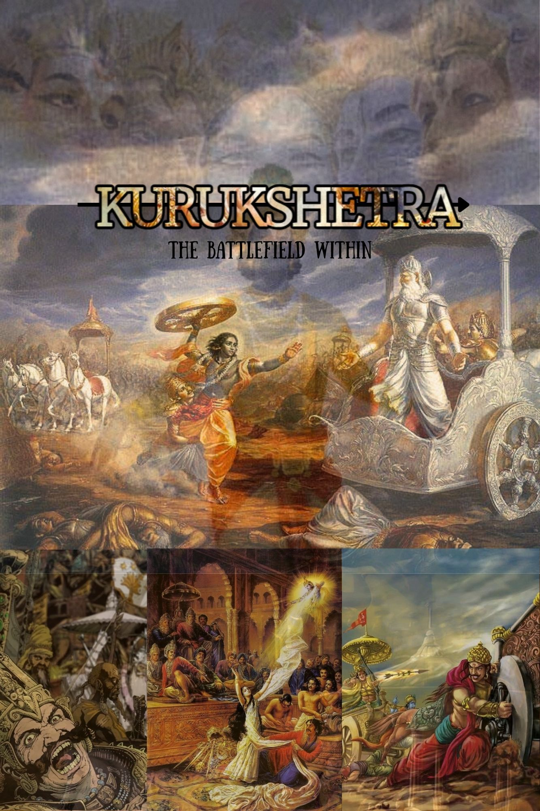
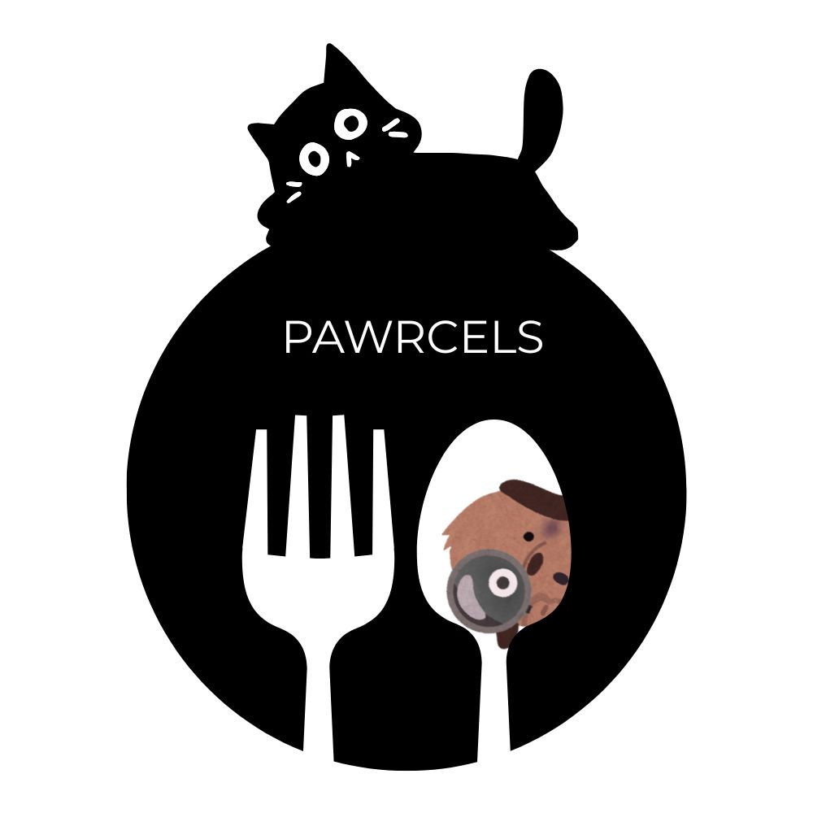

Part 1: Digital Book Cover (Bitmap Imagery)
Title: KURUKSHETRA: THE BATTLEFIELD WITHIN
Overall Concept: The design employs an overpopulated, multi-level montage technique to convey the primary themes of the Mahabharata: the war at large and the internal, ethical struggle (the "Battlefield Within").
Image Manipulation & Composition Decisions:
- Primary Focal Image (Center): The Moment of Truth
A high-resolution depiction of Krishna and Arjuna in the chariot establishes the conflict's philosophical core (the Bhagavad Gita). A medium transparency and a divine blend were applied to create a smoky atmosphere. - Background Layer (Top and Center-Top): The Eyes of the Observer
A heavily faded and blurred image of several gods is positioned across the top third of the cover. This layer uses a low opacity and subtle textured filter, symbolizing the vast, detached nature of the war and setting a mood of high drama. - Secondary Focal Images (Bottom Montage): The Consequences of War
Three distinct scenes—deceit (dice game), ethical breakdown (court scene), and death of karna—are collaged horizontally across the bottom third. The images are unified through careful color matching and blending with the overall earthy, sepia palette.
Text and Typography Decisions:
- Main Title: Uses the strong serif font Merriweather combined with a stylized FontFrame technique for a complex visual effect.
- Subtitle: Uses the clean, modern sans-serif font Sunday.

Part 2: Logo Design (Vector Imagery)

Logo Name: PAWRCELS
Primary Shape & Composition: The Delivery Bubble is the anchor, a large, bold black circular shape created with the Circle tool. This serves as the primary container for the central elements.
Integrated Animal & Utensil Elements:
- Cat (Top): A stylized black cat silhouette is positioned playfully on top of the circle, gazing down. Created using the Bezier/Pen tool and basic shapes.
- Dog (Inside Spoon): A small, faced brown dog face utilizes varied shapes and subtle texture/shading effects for depth, nestled inside the spoon bowl.
- Fork and Spoon: Stylized white fork and spoon are centrally placed. They were created using simple, clean vector shapes (rectangles for tines, ovals for spoon bowl) to ensure scalability.
Color Palette & Rationale:
- Monochromatic Base: Dominant colors are black and white, providing high-contrast, clean, and modern aesthetics essential for versatile branding.
- Accent Color: A warm brown for the dog adds a touch of organic texture.
- Rationale: The limited color palette adheres to best practices for vector logos that require optimal scalability and recognition across different mediums.
Typography:
- Organization Name: PAWRCELS uses the Montserrat (geometric sans-serif) typeface, chosen for its clean lines and contemporary feel, placed centrally below the utensils.